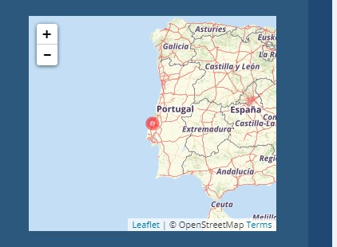
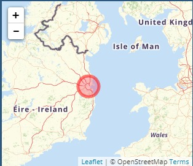
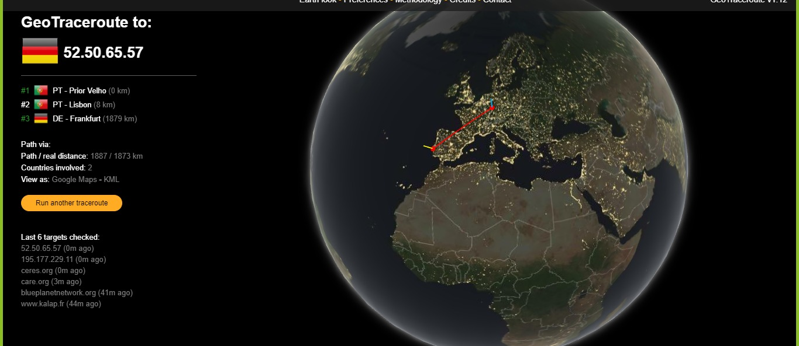
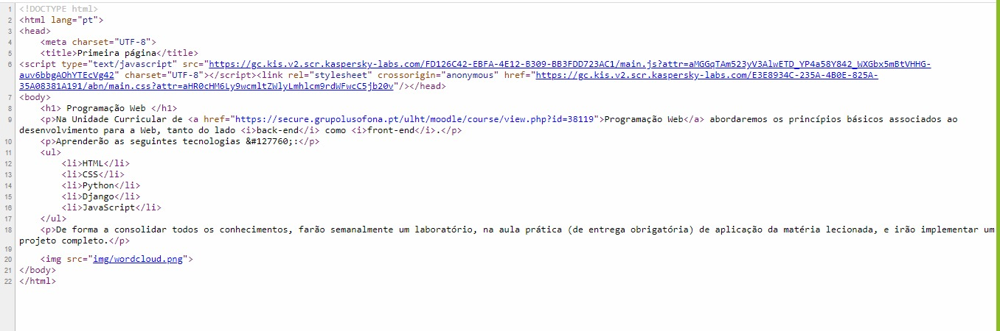
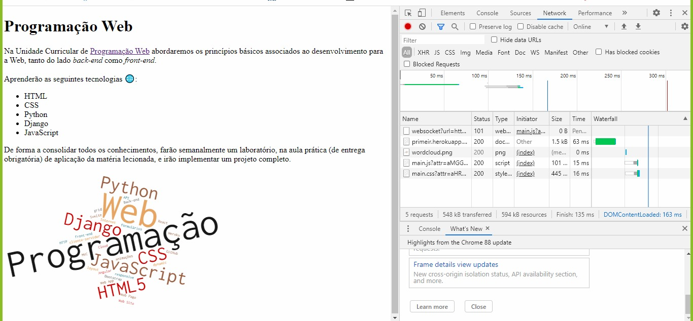
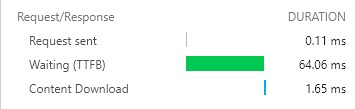
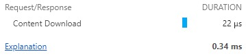
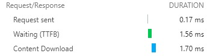
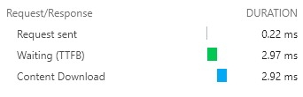

Primeiro Relatório 🌐
Cadeira: Programação WEB
Realizado por: Inês Rocha a22006692
Conhecer a Internet
- Endereços IP
- meu IP é - 93.108.59.122
- minha localizacão - Portugal/Leiria

- IP do Heroku é - 52.50.65.57
- localizacao do servidor Heroku - Irlanda/Leinster

- Percurso
- PT - Prior Velho (0 km)
- PT - Lisboa (8 km)
- DE - Frankfurt (1879 km)

Acesso via HTTP à minha página Web
- HTTP
- Para visualizar o código recebido, bastou clicar no botão direito do rato e selecionar "ver código fonte" desta forma foi possível verificar que o código recebido estava corretamente escrito.

- Inspect
- Para inspeccionar ficheiros descarregados pelo browser, basta clicar, como já anteriormente feito, no botão direito do rato e selecionar "inspeccionar", assim é possível analisar uma grande variedade de informação

- Foram descarregados 5 ficheiros:
- websocket
- ficheiro - index.html
- imagem - wordcloud.png
- script
- stylesheet
- Quando selecionamos cada um dos ficheiros, observa-se :
- Headers - obtemos toda a informaçao dentro da tag do documento HTML
- Preview - obtemos uma pré-visualização de cada ficheiro
- Timing - obtemos informação sobre os tempos de Queue e Transferência dos ficheiros
- Estes ficheiros tiveram os seguintes tempos:
|  |
- Tempo de Espera: 64.06ms
- Tempo de Descarga: 1.65ms
|
|  |
|
|  |
- Tempo de Espera: 1.56ms
- Tempo de Descarga: 1.70ms
|
|  |
- Tempo de Espera: 2.97ms
- Tempo de Descarga: 2.92ms
|